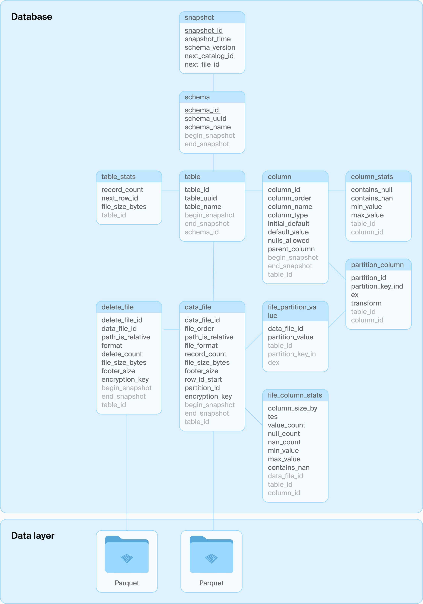

网络文章@202507
Naomi Wolf's The Beauty Myth was published in 1990. It took a critical theory-like lens on beauty ideals, and finding it all so awfully oppressive. Because, actually, seeing beautiful, slim people in advertising or media is bad. Because we don't all look like that! And who's even to say what "beauty" is, anyway? It's all just socially constructed! 娜奥米·沃尔夫的《美丽神话》于 1990 年出版。该书以批判理论的视角审视了美学标准，并认为这些标准具有极强的压迫性。因为，实际上，广告或媒体中出现的美丽、苗条的人形象是糟糕的。因为我们并非所有人都长那个样子！而且，谁又能定义什么是“美”呢？这不过是社会构建的产物！
That's the problem with the whole "representation" narrative. It proposes we're all better off if all we see is a mirror of ourselves, however obese, lazy, ignorant, or incompetent, because at least it won't be "unrealistic". Screw that. The last thing we need is a patronizing message that however little you try, you're perfect just the way you are. 这就是“代表性”叙事问题的症结所在。它主张，只要我们看到的都是自己的一面镜子——无论多么肥胖、懒惰、无知或无能——我们都会过得更好，因为至少这不会“不切实际”。去他的。我们最不需要的就是这种居高临下的信息：无论你多么努力，你就是完美的。
No, the beauty of ideals is that they ask more of us. Ask us to pursue knowledge, fitness, and competence by taking inspiration from the best human specimens. 不，理想的美在于它们对我们提出更高的要求。它们要求我们以人类最优秀的典范为榜样，追求知识、健康和能力。
Thankfully, no amount of post-modern deconstruction or academic theory babble seems capable of suppressing the intrinsic human yearning for excellence forever. The ideals are finally starting to emerge again. 值得庆幸的是，无论后现代解构还是学术理论的空洞说教，似乎都无法永远压制人类对卓越的内在追求。这些理想终于开始重新浮现。
培养能力比治疗更重要。 — Building competency is better than therapy
But it's just as much about the fact that these pursuits of competence usually offer a great opportunity for community as well that seals the deal. I've found time and again that people are starved for the kind of topic-based connections that, say, learning about Linux offers in spades. You're not just learning, you're learning with others. 但更重要的是，这些追求专业能力的过程本身往往也为建立社区提供了绝佳机会，这才是真正打动人的地方。我一次又一次地发现，人们迫切需要那种以特定主题为纽带的连接，而学习 Linux 正是这种连接的绝佳载体。你不仅是在学习，更是在与他人共同学习。
That is a time-tested antidote to depression: Forming and cultivating meaningful human connections. Yes, doing so over the internet isn't as powerful as doing it in person, but it's still powerful. It still offers community, involvement, and plenty of invitation to carry a meaningful burden. 这是经久不衰的抗抑郁良方：建立并培养有意义的人际关系。是的，通过互联网建立关系不如面对面交流来得有效，但它依然具有强大力量。它依然能提供归属感、参与感，以及承担有意义责任的诸多机会。
测试很难，而我们常常用错了激励方式 — Testing is Hard and we often use the wrong Incentives
I propose that there are better incentives available to us, namely: 我认为我们可以采用更有效的激励方式，即：
- Unique bugs found 发现的独特缺陷
- Clear proof of unexpected scale, resource and performance curve shapes 意外规模、资源和性能曲线形态的明确证据
Incentivising people in this way takes us down a very different path when hiring for QA organisations. It also changes the way we view developer contributions. Our QA engineers now become "breakers". They are no longer just reading the spec and validating against it - doing menial tasks that ChatGPT will one day perform. They are actively writing code that is, if they are clever, adaptively hunting for bugs. 这种激励方式为 QA 团队的招聘开辟了一条截然不同的道路。它也改变了我们对开发者贡献的看法。我们的 QA 工程师现在变成了"破坏者"。他们不再只是阅读规范并验证其正确性——做着某天 ChatGPT 就能完成的琐碎工作。他们正在积极编写代码，如果足够聪明，这些代码能自适应地寻找漏洞。
I want my QA engineers to be: 我希望我的 QA 工程师能够：
- In active, constructive opposition to the developers 与开发人员保持积极、建设性的对立关系
- Not be a secretary writing tests for developers who can't be bothered 不要成为那些懒得动手的开发者的测试秘书
- Inspired by the "IBM black team" 灵感来源于"IBM 黑队"
- A professional race driver testing the very limits of the car on the race track. 职业赛车手在赛道上测试车辆的极限性能
============
What is the problem with this way of "proving that your code works" ? 这种"证明代码正确"的方式存在什么问题？
- It makes it less likely that you will change interfaces that are hard to use and maintain by other programmers
它降低了开发者修改那些难以使用和维护的接口的可能性
- Because it requires so much changing of code around that interface. 因为这需要围绕该接口进行大量代码改动
- And you are now invested in the code you have just written 而你现在已经对你刚刚编写的代码投入了感情
- You end up with more test code, than code which does things
最终你会得到比实际功能代码更多的测试代码
- At best, it is a waste of time, at worst: it creates a maintenance nightmare. 往好了说是浪费时间，往坏了说则会引发维护噩梦。
- You often end up with a false confidence that your code works
你常常会错误地确信自己的代码能正常工作
- The things that matter, but which only happen in the wild, are not properly tested. 那些真正重要、但只会在实际环境中出现的情况，往往没有得到充分测试
- For example: Handling a broken connection, network packet loss or a sudden disconnect from the database 例如：处理连接中断、网络丢包或数据库突然断开的情况
- You often lose the ability to iterate fast and try out various, better code structures -
你常常会失去快速迭代和尝试各种更优代码结构的能力
- Because your precious flow state is broken by the incessant need to write unit tests to prove your assertions. 因为你宝贵的专注状态被不断需要编写单元测试来证明你的断言所打断。
- This erodes your ability to think of systems "as a whole" and instead switch to thinking only at the component level. 这会削弱你将系统视为"整体"思考的能力，转而只能从组件层面进行思考。
=======
We can spend our precious engineering time building unit tests which validate things we know will be tested later. If we do, we are unlikely to throw away entire components and build a better system. Because, when the time comes to do that, we will have run down the clock. In a deployed system at scale, we can refactor much more safely with unit tests. We may in fact need to build unit tests post-hoc simply to make sure we stay stable while the code is shaking. But while building the system, we should validate the system level before we burn our brain cycles writing too many unit tests. Once we know the system level design is sound, we can add tests (remember to plan for that). 我们可以将宝贵的工程时间用于编写单元测试，验证那些我们明知后续会被测试的内容。但若如此，我们很可能错失推翻整个组件、构建更优系统的机会。因为当重构时机来临时，时间早已耗尽。在规模化部署的系统中，单元测试能让我们更安全地进行重构。事实上，我们可能需要在事后补建单元测试，只为确保代码动荡期的稳定性。但在系统构建阶段，我们应当优先验证系统层级设计，而非过早消耗脑力编写过多单元测试。唯有确认系统设计稳健后，方可追加测试（切记为此预留计划空间）。
《耦合、复杂度与编码》 — Coupling, Complexity, and Coding
Coupling is the norm in nearly every other field of engineering and human effort. Instead of avoiding coupling - because it is too hard to grasp - it should be embraced and managed. Coupling leads to cheaper, more reliable and more effective systems level designs. 耦合几乎是所有其他工程领域和人类活动中普遍存在的常态。与其因为难以理解而回避耦合，不如主动接纳并管理它。耦合能够带来更经济、更可靠且更有效的系统级设计方案。
Coupling is also how we govern our species and run our economies at scale. Despite countless wars and attempts at destroying each other, we are still here. Something about coupling works! 耦合也是我们管理人类社会和规模化经济运行的方式。尽管经历了无数次战争和相互毁灭的尝试，我们依然存续至今。耦合的某些特质确实行之有效！
Our industry needs to rethink our obsession with decoupling. Like Patterns and "Best practises" - we are blindly applying the "decoupling is always good" principle locally, thinking it will lead to better system level design globally. The result is overly complex, expensive and fragile designs with a great deal of technical debt and code duplication. 我们行业需要重新审视对解耦的过度推崇。就像设计模式和"最佳实践"一样——我们正在局部盲目应用"解耦总是好的"原则，以为这会导致更好的系统级全局设计。结果却产生了过度复杂、昂贵且脆弱的设计，伴随着大量技术债务和代码重复。
Instead of automatically asking “How do we break this apart into smaller components I can understand?”, we should ask “How do we manage complexity so I can understand the system itself?”. De-coupling should only be introduced if the resulting system level design is less complex than a coupled design. Often, there exists a coupled design which is more maintainable, scalable and less complex than a decoupled design. As we can see in other fields of engineering and in nature itself - coupling is the norm, not the exception. This insight should humble us and make us question our a-priori decoupling strategies. 与其不假思索地追问"如何将其拆解为更小的、我能理解的组件？"，我们更应思考"如何管理复杂性以理解系统本身？"。只有当解耦后的系统设计比耦合设计更简单时，才应考虑解耦。事实上，往往存在某些耦合设计比解耦方案更易维护、更具扩展性且复杂度更低。正如我们在其他工程领域和自然界中所见——耦合才是常态而非例外。这一洞见应当让我们保持谦逊，并对那些先入为主的解耦策略进行反思。
The idea of trusting each actor with independent decision making and power stands in stark contrast to the idea of hierarchical control. Coupled systems are more resilient to change and ultimately, more stable than hierarchical systems. The collapse of the Soviet Union is a good example of what happens when a hierarchical system (the Soviets) stands face to face with a coupled system that can adapt. The establishment of highly coupled organisations (ex: The UN, the EU, WHO) are examples of how we can introduce coupling into human governance to construct systems which, while slow moving, are able to stabilise the world we live in and adapt to technological change in a responsible manner. This slows things down, but it avoids the chaos which ensued when the world was controlled by power hierarchies competing with each other. Coupling comes with its own complexity: The protocols and ground rules needed for actors to communicate effectively. I personally feel we have failed at adapting those protocols to the modern, globalist world. That does not make the system itself broken and we shouldn't remove coupling - that would just result in the same amateur systems we get from blindly applying decoupling. But perhaps we need a few software updates to make each component more resilient. 让每个行为体拥有独立决策权和权力的理念，与等级控制理念形成鲜明对比。耦合系统比等级制系统更具变革韧性，最终也更加稳定。苏联解体就是等级制系统（苏维埃）遭遇自适应耦合系统时发生崩溃的典型案例。建立高度耦合的组织（如联合国、欧盟、世卫组织）证明，我们可以将耦合机制引入人类治理体系，构建出虽然行动迟缓，但能稳定我们生存的世界、并以负责任方式适应技术变革的系统。这种机制会延缓进程，但避免了权力等级相互竞争主宰世界时引发的混乱。耦合机制自带复杂性：行为体需要建立有效沟通的协议和基本规则。我个人认为，我们未能使这些协议适应现代全球化世界。 这并不意味着系统本身存在问题，我们也不应该消除耦合——盲目解耦只会产生与业余系统相同的效果。但或许我们需要通过几次软件更新来增强每个组件的健壮性。
Coupled systems take more effort the understand. They require a deeper appreciation of the system as a whole. They require you to engage with the reasons things are like they are. Taking a sledgehammer to a highly coupled system and replacing it with the will of a few individuals who value hierarchy, is playing with toys neither you, nor anyone else, understand. If you are playing with those toys, you are betting with not just your own future, but that of your children. 耦合系统需要投入更多精力才能理解。它们要求人们对整个系统有更深入的认识。你必须探究事物为何如此存在的深层原因。用蛮力拆解高度耦合的系统，仅凭少数崇尚等级制度者的意志来重建，无异于摆弄连你自己和他人都不理解的玩具。若执意玩弄这些玩具，你不仅是在拿自己的未来赌博，更是在拿子孙后代的命运下注。
《贪婪工程与勇气工程之争》 — Greed vs Bravery Based Engineering
Think, for a moment, about how little Apple, Google, Meta and Microsoft has achieved the last 15 years. Consider the amount of capital they have deployed and how that capital has produced almost zero, beneficial outcomes for humanity as a whole. These companies have enormous workforces. They are full of HR processes, management theories, organisational complexity AND highly skilled people. Yet, very little civilisational value comes out of them. In fact, they are actively harming the economy by vacuuming up talent and putting it to work on pointless ideas that are inefficiently executed. 试想一下，过去 15 年间苹果、谷歌、Meta 和微软的成就何其有限。考量它们投入的巨额资本，这些资本几乎未给全人类带来任何有益成果。这些公司拥有庞大的员工队伍，充斥着人力资源流程、管理理论、组织复杂性以及高技能人才。然而它们产出的文明价值微乎其微。事实上，它们通过虹吸人才并将其投入低效执行的无意义项目，正在积极损害经济。
- Greed favours low quality. It takes shortcuts 贪婪催生低质量。它追求捷径
- Greed favours bloated organisations with extremely low productivity per employee 贪婪偏爱机构臃肿而人均产能极低的组织
- Greed is inefficient - particularly when it operates in a market dominated by large players who cannot be challenged by the regulators. 贪婪是低效的——尤其是在由监管机构无法制约的巨头主导的市场中。
To make people buy the services provided by Amazon - they needed software engineers to look up to them. Fortunately for Amazon, Social Media had at this point embedded itself into every industry. All they needed was to plant stupid cloud service ideas into the minds of useful idiots. Idiots, who would then start spreading the Web 2.0 architecture as gospel and best practise to be applied without thinking. 为了让人们购买亚马逊提供的服务，他们需要软件工程师对其顶礼膜拜。对亚马逊而言幸运的是，社交媒体此时已渗透至各行各业。他们只需将愚蠢的云服务概念植入"有用的白痴"脑中——这些白痴随后就会开始将 Web 2.0 架构当作不容置疑的真理和最佳实践四处传播。
And thus, microservices, object stores, NoSQL, complex message queues, serverless computing and other stupid ideas spread - casting a grim shadow out the perfectly fine IT architecture that had served us so well until the collapse of capitalism. Defending the "old ways" was now delegated to grumpy, old men like myself who still remember a time when you could run your entire, large company on a small server with software that was easy to debug and maintain. Not because companies were simpler back then, but because software in the old days was made by people who didn't celebrate needless complexity as an achievement to put on their CV. 于是，微服务、对象存储、NoSQL、复杂的消息队列、无服务器计算等愚蠢概念开始蔓延——给原本运行良好的 IT 架构投下阴霾，这些架构在资本主义崩塌前一直为我们提供着可靠服务。捍卫"传统方式"的重任如今落在了像我这样脾气暴躁的老头子肩上，我们仍记得那个时代：用一台小型服务器就能支撑整个大型企业的运转，软件易于调试和维护。不是因为那时的企业更简单，而是因为旧时代的软件是由那些不把无谓复杂度当作简历镀金资本的人打造的。
- Greed favours complexity for its own sake. It needs you to believe that simple things are hard 贪婪偏爱为复杂而复杂。它需要你相信简单的事情很难做到
- Greed needs a steady supply of useful idiots to drive consumption and create enough noise to drown out reason. 贪婪需要源源不断的"有用白痴"来推动消费，制造足够噪音淹没理性声音。
Too often, I hear developers follow this line of thinking: 我经常听到开发者这样思考：
- This looks complicated 这看起来太复杂了
- I don't like to engage with complexity 我不喜欢处理复杂问题
- Let me do a short term hack, that does not fully satisfy the requirements - but gets me off the hook 让我做个临时方案吧，虽然不能完全满足需求——但能让我脱身
- We can always fix it properly later (you never get there) 我们总能稍后再妥善解决（但你永远到不了那一步）
This is the Greed mindset operating behind the scenes. 这正是贪婪思维在暗中作祟。
必然之声 | 我的容身之处 — The sound of inevitability | My place to put things
Being able to put a name to something abstract allows you to more easily build an argument about it, explain the concept to strangers, and unify opposition to it. It’s a key success of Professor Zuboff’s book that it has introduced so many new terms to the lexicon. 能够为抽象事物命名，能让你更轻松地构建相关论点、向陌生人解释这个概念，并凝聚反对力量。祖博夫教授著作的重要成就之一，就是为我们的语汇引入了如此多的新术语。
The word that is relevant to this post is “Inevitabilism”. 与本文相关的词汇是"必然主义"。
These are some big names in the tech world, all framing the conversation in a very specific way. Rather than “is this the future you want?”, the question is instead “how will you adapt to this inevitable future?”. Note also the threatening tone present, a healthy psychological undercurrent encouraging you to go with the flow, because you’d otherwise be messing with scary powers way beyond your understanding. 这些都是科技界的大人物，他们都在用一种特定的方式构建这场对话。问题不是“这是你想要的未来吗？”，而是“你将如何适应这个不可避免的未来？”。还要注意其中隐含的威胁语气，这种微妙的心理暗示鼓励你随波逐流，否则你就是在对抗远超你理解的可怕力量。
校园里的叛逆者——Daniel Lemire 的博客 — Rebels on campus – Daniel Lemire's blog
[!NOTE] « Normal science, the activity in which most scientists inevitably spend most all their time, is predicated on the assumption that the scientific community knows what the world is like. Normal science often suppresses fundamental novelties because they are necessarily subversive of its basic commitments. As a puzzle-solving activity, normal science does not aim at novelties of fact or theory and, when successful, finds none. » Thomas Kuhn “常规科学，即大多数科学家不可避免地将其绝大部分时间投入其中的活动，其前提假设是科学界已经了解世界的本质。常规科学常常压制根本性的创新，因为这些创新必然会颠覆其基本信念。作为一种解谜活动，常规科学并不追求事实或理论上的创新，当它成功时，也找不到任何创新。” ——托马斯·库恩
为什么衡量生产力如此困难——Daniel Lemire 的博客 — Why measuring productivity is hard – Daniel Lemire's blog
Why is it so hard? The issue is that you’re likely not measuring what you think. Productivity is value per unit of time, but defining “value” is problematic. 为什么这么难？问题在于你测量的可能并非你以为的东西。生产率是单位时间创造的价值，但如何定义"价值"却是个难题。
Long-term, value follows a Pareto distribution, where most value is created in unpredictable, short bursts. 长期来看，价值遵循帕累托分布，大部分价值产生于不可预测的短暂爆发期。
For instance, a sudden idea in the shower might lead to an hour of work equivalent in value to the rest of the month’s efforts. 比如淋浴时突然的灵光一现，可能带来一小时的工作成果，其价值抵得上整个月的努力。
Does it mean that you should slack off, wait for the brilliant insight? No. That’s the problem with the Pareto distribution in general. 这是否意味着你应该懈怠，等待灵感的降临？不。这正是帕累托分布普遍存在的问题。
Maybe you are running a company and figure that 20% of your employees do 80% of the work. So you fire the 80% that are less productive. And what happens? Maybe you find out that Joe, who seemed unproductive, was holding your business together and you need to rehire him quickly. 或许你经营着一家公司，发现 20%的员工完成了 80%的工作。于是你解雇了那 80%效率较低的员工。结果如何？可能你会发现看似效率低下的乔其实是维系公司运转的关键，不得不赶紧重新聘用他。
The fundamental issue is that you have limited knowledge. You do not know where the value lies when you are in the middle of it. So by slacking off, you are likely to just greatly diminish the probability that you will have a sudden burst of high productivity. 根本问题在于认知有限。身处其中时，你往往无法准确判断价值所在。因此懈怠很可能会大幅降低你突然实现高效产出的可能性。
Long term, you can probably identify the less productive activities. Maybe you have been going to these meetings for two years now, and nothing got done. 长期来看，你或许能识别出低效行为。比如那些持续两年却毫无成果的会议。
But this like side project of yours, that looks like a waste of time, could be (truly) the most important work you could be doing. 但那个看似浪费时间的副业项目，很可能（确实）是你所能做的最重要工作。
《DuckLake：将 SQL 作为湖仓格式——DuckDB》 — DuckLake: SQL as a Lakehouse Format – DuckDB
BEGIN TRANSACTION; -- some metadata reads skipped here INSERT INTO ducklake_data_file VALUES (0, 1, 2, NULL, NULL, 'data_files/ducklake-8196...13a.parquet', 'parquet', 2, 279, 164, 0, NULL, NULL); INSERT INTO ducklake_table_stats VALUES (1, 2, 2, 279); INSERT INTO ducklake_table_column_stats VALUES (1, 1, false, NULL, '42', '43'); INSERT INTO ducklake_file_column_statistics VALUES (0, 1, 1, NULL, 2, 0, 56, '42', '43', NULL) INSERT INTO ducklake_snapshot VALUES (2, now(), 1, 2, 1); INSERT INTO ducklake_snapshot_changes VALUES (2, 'inserted_into_table:1'); COMMIT;

[!NOTE]
Our industry insists on not learning from the past. Every 10 years, our collective memory is wiped clean and we relearn why database were a good idea in the first place. I have seen this cycle repeat itself at least 3 times. 我们这个行业总是拒绝从历史中吸取教训。每过十年，我们的集体记忆就会被清空一次，然后重新领悟数据库最初为何是个好主意。我至少已经目睹这个循环重复了三次。
And that, is why DuckLake will not win. There are very few of us left, the ones familiar with SQL, the ones who don't fear it. At the very mention of the word "SQL", the majority of programmers will be running for the hills. Let's have optimistic concurrency on AVRO files instead - because any pain, no matter how large, is better than learning SQL. Even if it means reinventing a database to avoid using one. 正因如此，DuckLake 不会胜出。我们这些熟悉 SQL、不畏惧 SQL 的人已经所剩无几。只要一提到"SQL"这个词，大多数程序员就会望风而逃。他们宁愿在 AVRO 文件上实现乐观并发控制——因为任何痛苦，无论多大，都比学习 SQL 要好。即便这意味着要 reinvent 一个数据库来避免使用真正的数据库。
[!NOTE]
But I will point this out: If you set out to create a table format which locks people into cloud vendors, creates a large market for addon products and makes it nearly impossible to move away from that format - you would have created Iceberg. 但我要指出：如果你想设计一种表格格式，既能将用户锁定在云服务商体系中，又能为附加产品创造巨大市场，同时还让用户几乎无法摆脱这种格式——那么你最终创造出的就是 Iceberg。
On the other hand - if you are one of those people who just can't stand databases and therefore never took the time to learn how they work - you might also have created Iceberg. 另一方面——如果你属于那种无法忍受数据库、因此从未花时间了解其工作原理的人——你可能也会创造出 Iceberg。
Right now, an undergrowth of vendors are building products that help you use Iceberg. A new market is emerging just to give you a functional database. A database that does exactly what your old database can already do - but on top of this new format, with worse performance. There is an enormous amount of lobbying going on for this to be the standard. The ones who stand to benefit the most - are the cloud vendors. Draw your own conclusions. 眼下，众多供应商正纷纷开发基于 Iceberg 的产品。一个新兴市场正在形成，仅仅为了提供功能完备的数据库——这些数据库所能实现的，恰恰是传统数据库早已具备的功能，只不过基于这种新格式运行，且性能更差。当前有大量游说力量在推动其成为行业标准。而最大受益者——正是云服务供应商。个中深意，不言自明。
这个部分描述了文件系统来存储数据的问题，为什么需要使用数据库来管理数据。我理解第二部分作者来吐槽说，为什么iceberg又重新回到了使用文件系统来管理元数据，而ducklake似乎是更好的方式？
然后对象存储代替了文件系统，所以数据库需要重新设计来配合对象存储系统。对象存储在设计上比文件系统要容易或者是丑陋，但是扩展性更好更容易scale出去。云厂商可以使用这种对象存储进行溢价收费。云厂商的强势则是要求数据库厂商来适配自己的对象存储。
数据库厂商比如databricks,snowflake,clickhouse搭建在对象存储上，但是可以使用大量缓存来提高数据库性能，只不过这种性能问题重新被解决了一遍(for object storage via caching).
Why on earth did cloud vendors then switch to Object Storage with an HTTP interface? And if it is such a good idea, why isn't everyone using it? I have two facts, and two theories. 那么云厂商为何最终转向采用 HTTP 接口的对象存储？如果这个方案如此优秀，为何不是所有人都在使用它？我有两个事实依据和两个理论假设。
Fact 1: Object Storage sucks! Like the fax machine, it is a civilisational step backwards - a sort of "dis-invention". Everything can speak HTTP - the protocol Object Storage uses. But everyone can speak block storage too! HTTP is not a very good protocol for high speed modification of data. It is particularly bad if you must change a lot of small things quickly. HTTP adds latency, it adds overhead, it makes clients really complicated when you desire speed and concurrency. HTTP over TCP is also very hard to scale when you need lots and high read speed - because a single TCP pipe just isn't fast enough on most implementations. And once you start to multiplexing over HTTP and having to deal with retries - you are in for a world of pain … 事实 1：对象存储糟透了！就像传真机一样，它是文明发展的一次倒退——某种意义上的"反发明"。所有系统都能使用 HTTP 协议（对象存储采用的协议），但同样也都能使用块存储！HTTP 并非高速数据修改的理想协议，当需要快速修改大量小型数据时表现尤其糟糕。HTTP 会引入延迟、增加开销，在追求速度和并发时会让客户端变得异常复杂。当需要高吞吐量读取时，基于 TCP 的 HTTP 也难以扩展——因为在大多数实现中，单条 TCP 通道的速度根本不够快。而一旦开始通过 HTTP 进行多路复用并不得不处理重试机制时，你就会陷入无尽的痛苦之中……
Fact 2: You can get away with being pretty stupid if you only implement scalable object storage. Implemeting large, distributed file systems takes real brains and effort. Even at scale, Object Storage, because it is so overly simple - is just easier to run and maintain than a block based file system. Unfortunately, you are shifting the complexity burden to the clients consuming it: It is a lot harder to talk to Object Stores in any serious manner than it is to talk to block based file system. Dealing with the connection management, backoffs and retries required to get good speed out of S3 is needlessly complex. But who cares, it's the customer who pays the price - not the cloud vendor! 事实二：如果只实现可扩展的对象存储，即使设计得相当简陋也能蒙混过关。而要实现大型分布式文件系统，则需要真正的智慧与努力。即便在规模相当的情况下，由于对象存储的极度简单性，其运维难度仍远低于基于块存储的文件系统。但不幸的是，这种复杂性被转嫁给了使用它的客户端：与基于块存储的文件系统交互相比，以任何严谨方式与对象存储通信都要困难得多。为了从 S3 获得理想速度而不得不处理的连接管理、退避重试等机制，其复杂程度简直毫无必要。但谁在乎呢？最终买单的是客户——而非云服务商！
Theory 1: Cloud vendors embraced Object Storage because it allows them to overcharge customers for block based storage. EBS is stupidly expensive compared to S3. Not because it has to be, but because Amazon wants to charge you for convenience and simplicity - or lock you into their S3 ecosystem if you don't pay up. 理论一：云服务商之所以拥抱对象存储，是因为这能让他们对块存储服务收取超额费用。与 S3 相比，EBS 的价格高得离谱——并非因其成本使然，而是亚马逊既想为便利性收取溢价，又试图通过价格手段将用户锁定在其 S3 生态系统中。
Theory 2: Cloud vendors further advanced the Object Storage model because it allowed them to derail the conversation customers were already having with SAN vendors. SAN, for those of you who don't remember, is block based, networked storage. The SAN market was dominated by a few vendors: HP, EMC, IBM and Hitachi. These companies were inflexible, expensive and terrible implementors of block based storage. But like so many old IT vendors, they were deeply embedded into the C-level at their customers. By introducing Object Storage, cloud vendors (back then, the incumbents) could say: "It's the technology that is wrong and these vendors are dinosaurs.". The latter was true, the former was not. By telling a big lie embedded in a truth, the cloud vendors channelled an old saying by another wannabe word dominator (whose name doesn't deserve quoting): 理论二：云服务商进一步推动了对象存储模型的发展，因为这使他们能够转移客户与 SAN 厂商之间原有的对话。SAN（对于不熟悉的读者而言）是基于块的网络存储。SAN 市场曾被少数几家厂商垄断：惠普、EMC、IBM 和日立。这些公司僵化保守、定价高昂，且是糟糕的块存储方案实施者。但与众多传统 IT 厂商一样，它们已深度渗透到客户的高管层。通过引入对象存储，云服务商（当时的行业颠覆者）可以宣称："是技术本身出了问题，这些厂商都是恐龙。"后半句属实，前半句不然。通过将弥天大谎包裹在真相之中，云服务商完美诠释了另一位妄图操控舆论者（其名不值一提）的名言：
If data changes, even if you only append new rows, metadata must change too. And whenever we access data, we must do so via metadata (if not, we can't find the data). That means we need metadata to be: 如果数据发生变化，即使只是追加新行，元数据也必须随之改变。每当我们访问数据时，都必须通过元数据进行（否则就无法找到数据）。这意味着我们需要元数据具备以下特性：
- Fast to read, write and overwrite 快速读取、写入和覆盖
- Predictable under sustained load 在持续负载下表现稳定可预测
- Atomically consistent so we can implement transactions across tables 具备原子一致性，可跨表实现事务处理
- Scalable, so metadata data does not become the bottleneck as we change data 可扩展，确保元数据不会随着数据变更成为瓶颈
- Easy to defragment continuously, so its performance does not degrade over time 易于持续进行碎片整理，因此其性能不会随时间推移而下降
- Very good at handling lots of small changes (since each metadata change is tiny compared to the data it points at) 非常擅长处理大量小规模变更（因为每个元数据变更相对于其指向的数据量来说都非常微小）
- Queryable, even with complex queries. So you can find your data again if you have the metadata. Its almost as if we need it be… "indexed"? 可查询，即使执行复杂查询。只要拥有元数据，您就能重新找到数据。这几乎就像我们需要它具备…"索引"功能？
You will notice that Object Storage is unique unsuited for this use case. If only we had a technology that could handle this use case? 您会发现对象存储完全不适合这种使用场景。要是有一种技术能解决这个问题就好了？
If we keep on optimizing the proxy objective, even after our goal stops improving, something more worrying happens. The goal often starts getting worse, even as our proxy objective continues to improve. Not just a little bit worse either — often the goal will diverge towards infinity. 如果我们继续优化代理目标，甚至在我们的目标停止改善之后，更令人担忧的事情就会发生。即使我们的代理目标不断改进，目标也往往开始变得越来越糟。也不仅仅是变差一点点，目标往往会向无穷大的方向偏离。
This is an extremely general phenomenon in machine learning. It mostly doesn't matter what our goal and proxy are, or what model architecture we use3. If we are very efficient at optimizing a proxy, then we make the thing it is a proxy for grow worse. 这是机器学习中极为普遍的现象。我们的目标和代理是什么，或者我们使用的模型架构是什么，这些大多无关紧要 3 。如果我们在优化代理时非常高效，那么我们就会使其所代理的事物变得更糟。
Though this pheonomenon is often discussed, it doesn't seem to be named4. Let's call it the strong version of Goodhart's law5. We can state it as: 虽然人们经常讨论这种现象，但似乎并没有为它命名 4 。让我们把它称为古德哈特定律的强版本 5 。我们可以把它表述为
When a measure becomes a target, if it is effectively optimized, then the thing it is designed to measure will grow worse. 当一项措施成为目标时，如果它得到有效优化，那么它所要衡量的事物就会越来越糟糕。
Goodhart's law says that if you optimize a proxy, eventually the goal you care about will stop improving. The strong version of Goodhart's law differs in that it says that as you over-optimize, the goal you care about won't just stop improving, but will instead grow much worse than if you had done nothing at all. 古德哈特定律说，如果你对代理进行优化，你所关心的目标最终会停止改善。古德哈特定律的强力版本与此不同，它说的是，当你过度优化时，你所关心的目标不仅不会停止改善，反而会比你什么都不做时更糟。
Goodhart's law applies well beyond economics, where it was originally proposed. Similarly, the strong version of Goodhart's law applies well beyond machine learning. I believe it can help us understand failures in economies, governments, and social systems. 古德哈特定律的适用范围远远超出了其最初提出的经济学范畴。同样，强版古哈特定律的适用范围也远远超出了机器学习。我相信，它可以帮助我们理解经济、政府和社会系统的失灵。
我爱计算器 — I love calculator | karpathy
Let's put this in perspective to the technology we increasingly accept as normal. The calculator requires no internet connection to set up. It won't ask for bluetooth permissions. It doesn't want to know your precise location. You won't be prompted to create an account and you don't need to log in. It does not download updates every other week. You're not going to be asked over and over to create and upgrade your subscription to the Calculator+ version that also calculates sine and cosine. It won't try to awkwardly become a platform. It doesn't need your credit card on file. It doesn't ask to track your usage to improve the product. It doesn't interrupt you randomly asking you to review it or send feedback. It does not harvest your information, for it be sold later on sketchy data markets, or for it to be leaked on the dark web on the next data breach. It does not automatically subscribe you to the monthly newsletter. It does not notify you every time the Terms of Service change. It won't break when the servers go down. The computation you perform on this device is perfectly private, secure, constrained fully to the device, and no running record of it is maintained or logged anywhere. The calculator is a fully self-contained arithmetic plugin for your brain. It works today and it would work a thousand years ago. You paid for it and now it is yours. It has no other master. It just does the thing. It is perfect.
让我们把它与我们日益习以为常的技术联系起来。计算器的设置不需要连接互联网。它不会要求蓝牙权限。它不想知道你的确切位置。它不会提示你创建账户，你也不需要登录。它不会每隔一周下载一次更新。它不会一遍又一遍地要求你创建并升级订阅 Calculator+ 版本，该版本还能计算正弦和余弦。它不会试图尴尬地成为一个平台。它不需要你的信用卡记录。它不会要求追踪你的使用情况以改进产品。它不会随意打断你，要求你对它进行评论或发送反馈。它不会收集你的信息，以便日后在草率的数据市场上出售，或在下一次数据泄露时在暗网上泄露。它不会自动向你订阅每月通讯。它不会在每次服务条款变更时通知你。服务器宕机时，它也不会中断。您在本设备上进行的计算完全保密、安全，完全受限于本设备，不会在任何地方保留或记录任何运行记录。计算器是一个完全独立的大脑运算插件。它今天能用，一千年前也能用。你花钱买了它，现在它就是你的了。它没有其他主人。它只负责计算。它是完美的。
职业建议或类似建议 - 马克的博客 — Career advice, or something like it - Marc's Blog
Cynicism is bad. 玩世不恭是不好的。
If I could offer you a single piece of career advice, it’s this: avoid negativity echo chambers. 如果我能给你们提供一条职业建议，那就是：避免消极的回声室。
Every organization and industry has watering holes where the whiners hang out. The cynical. The jaded. These spots feel attractive. Everybody has something they can complain about, and complaining is fun. These places are inviting and inclusive: as long as you’re whining, or complaining, or cynical, you’re in. If you’re positive, optimistic, or ambitious, you’re out. 每个组织、每个行业都有发牢骚的人出没的地方。愤世嫉俗者。厌倦者。这些地方感觉很有吸引力。每个人都有可以抱怨的地方，而抱怨是一种乐趣。这些地方充满了吸引力和包容性：只要你在发牢骚、抱怨或愤世嫉俗，你就可以加入。如果你是积极、乐观或雄心勃勃的人，你就会被拒之门外。
Avoid these places. 避开这些地方。
That doesn’t mean you need to be 100% up-beat all the time, or be a pushover, or never complain. Those things are normal human behavior. But strongly avoid communities that make complaining the core of their identity. My personal limit is about 20%. I’ll stop engaging with communities when 20% of the content is negative. 这并不意味着你需要一直保持 100%的乐观，或者是一个推卸责任的人，或者从不抱怨。这些都是正常的人类行为。但要坚决避免那些以抱怨为核心特征的社区。我个人的上限是 20%。如果社区中 20% 的内容都是负面的，我就会停止参与。